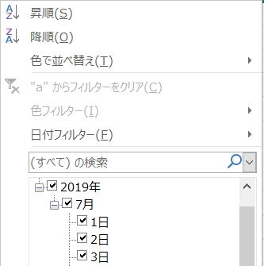

オートフィルターを退避回復するVBAクラス

シートにオートフィルターが適用されていて、かつ絞り込みされている場合は、
マクロVBAでは、何かと注意が必要になります。
このような場合、
オートフィルターを解除するか、フィルター絞り込みをクリアして対応している事が多くなります。
それまでの絞り込み条件が消えてしまい、元の状態に戻すことができなくなります。
Cells(Rows.Count, 1).End(xlUp).Row
これは、表示されている最終行になりますので、
非表示行がある場合は、本来の表の最終行は取得できません。
CurrentRegion等を使う事で、対応するVBAにすることはできます。
最終行・最終列の取得方法（End,CurrentRegion,SpecialCells,UsedRange）
また、セルのコピーをしている場合の問題点もあるでしょう。
Copyメソッドでは、フィルターで非表示になっている行はコピーされません。
マクロVBAで使えるテクニックが制限されます、逆の言い方をすれば、よりテクニックが必要になってきます。
現実的な対応としては、上で述べたように、
・オートフィルターを解除
・フィルター絞り込みをクリア
・フィルターされていても良いマクロVBAを書く
このいずれかになるだろうと思います。
そして、このような対応の方がより良いはずです。
したがって今回作成のVBAクラスは、
フィルター、条件付き書式、そしてVBAクラス、さらにDictionaruの学習素材としてお考えいただいたほうが良いかもしれません。
ただし後に述べるように、完全には元に戻せない場合もありえますのでぜひ最後までお読みください。
オートフィルターに関するページ
マクロの記録でVBA：第18回.オートフィルタ
マクロVBAサンプル集：オートフィルター（AutoFilter）
オートフィルタ（AutoFilter）の使い方まとめ
オートフィルターを退避回復するVBAクラスの概要
退避
・指定シートのオートフィルターの条件を退避（オートフィルター範囲の全列））
・オートフィルターの絞り込みを解除
・指定シートのオートフィルターの条件を回復し再絞り込み
オートフィルターを退避し回復するクラスのVBAコード
Option Explicit
'フィルター構造体
Private Type tFilter
On As Boolean
Count As Long
Criteria1 As Variant
Criteria2 As Variant
Operator As XlAutoFilterOperator
End Type
'対象シート
Private pWs As Worksheet
'フィルター→構造体→配列として退避
Private pFilter() As tFilter
'オートフィルターのアドレス文字列
Private pAutoFilterRange As String
'============================================================
' 公開プロパティ
'============================================================
'対象シートのプロパティ
Public Property Set Worksheet(ws As Worksheet)
Set pWs = ws
End Property
Public Property Get Worksheet() As Worksheet
Set Worksheet = pWs
End Property
'オートフィルターの既定プロパティをラップ
Public Property Get AutoFilter() As AutoFilter
Set AutoFilter = Me.Worksheet.AutoFilter
End Property
Public Property Get AutoFilterMode() As Boolean
AutoFilterMode = Me.Worksheet.AutoFilterMode
End Property
Public Property Get FilterMode() As Boolean
If Not Me.AutoFilterMode Then Exit Property
FilterMode = Me.AutoFilter.FilterMode
End Property
Public Property Get FiltersCount() As Long
If Me.AutoFilter Is Nothing Then Exit Property
FiltersCount = Me.AutoFilter.Filters.Count
End Property
Public Property Get FilterOn(index As Long) As Boolean
If index < UBound(pFilter) Or index < UBound(pFilter) Then Exit Property
FilterOn = pFilter(index).On
End Property
'============================================================
' クラスの既定イベント
'============================================================
'クラス初期処理：Applicationのプロパティ退避・設定
Private Sub Class_Initialize()
'必要ないが形式的に初期化
Erase pFilter
pAutoFilterRange = ""
End Sub
'クラス終了処理：メモリ解放とApplicationのプロパティ復元
Private Sub Class_Terminate()
Set Me.Worksheet = Nothing
End Sub
'============================================================
' 公開メソッド
'============================================================
'オートフィルター退避：エラー時はFalseを返す
Public Sub StoreAutoFilter(ByVal ws As Worksheet)
'受け取ったワークシートを退避
Set Me.Worksheet = ws
'フィルター未適用は抜ける
If Not Me.AutoFilterMode Then Exit Sub
'オートフィルターがVBAで解除される場合の対処
pAutoFilterRange = Me.AutoFilter.Range.Address
'オートフィルター列数分の処理
ReDim pFilter(1 To Me.FiltersCount)
'条件退避：日付とアイコンセットを除く
Call StoreAutoFilter1
'条件退避：アイコンセットのみ
Call StoreAutoFilter2
'条件退避：残った日付を条件退避
Call StoreAutoFilter3
'オプション指定により全データ表示
If Me.FilterMode Then Me.Worksheet.ShowAllData
End Sub
'オートフィルター復元：エラー時はFalseを返す
Public Sub ReStoreAutoFilter(Optional ByVal isAutoFilter As Boolean = True)
'オートフィルターがVBAで解除された場合の対処
If Not AutoFilterMode Then
If isAutoFilter And pAutoFilterRange <> "" Then
'列数変更なし&起点セルは動いていないことが前提
Me.Worksheet.Range(pAutoFilterRange).AutoFilter
Else
Exit Sub
End If
End If
'オートフィルターの範囲を取得
Dim myRange As Range
Set myRange = Me.AutoFilter.Range
Dim i As Integer, sSplit() As String, v As Variant
'オートフィルター列数分の処理
For i = 1 To UBound(pFilter)
'フィルター絞り込みされている場合
If pFilter(i).On Then
Select Case pFilter(i).Operator
Case xlFilterIcon 'アイコンセット
'条件付き書式のアイコンセット & LF & 選択インデックス
sSplit = Split(pFilter(i).Criteria1, vbLf)
If sSplit(0) > 0 Then
'ブックのアイコンセットから取得
Set v = Me.Worksheet.Parent.IconSets(sSplit(0))(sSplit(1))
myRange.AutoFilter Field:=i, _
Criteria1:=v, _
Operator:=pFilter(i).Operator
End If
Case 0 '単一値or日付
If IsEmpty(pFilter(i).Criteria2) Then
'Operator=0をいれるとエラーになる
myRange.AutoFilter Field:=i, _
Criteria1:=pFilter(i).Criteria1
Else
'これは日付だけの場合
myRange.AutoFilter Field:=i, _
Criteria2:=pFilter(i).Criteria2, _
Operator:=pFilter(i).Operator
End If
Case Else
If IsEmpty(pFilter(i).Criteria2) Then
'Criteria1のみ
myRange.AutoFilter Field:=i, _
Criteria1:=pFilter(i).Criteria1, _
Operator:=pFilter(i).Operator
Else
'Criteria1とCriteria2
myRange.AutoFilter Field:=i, _
Criteria1:=pFilter(i).Criteria1, _
Criteria2:=pFilter(i).Criteria2, _
Operator:=pFilter(i).Operator
End If
End Select
End If
Next
End Sub
'============================================================
' 非公開メソッド
'============================================================
'条件退避：日付とアイコンセットを除く
Private Sub StoreAutoFilter1()
Dim wsFilter As Filter, myRange As Range
Dim i As Integer, ix As Long
Dim flgDay As Boolean
For i = 1 To Me.AutoFilter.Filters.Count
Set wsFilter = Me.AutoFilter.Filters(i)
pFilter(i).On = wsFilter.On
'フィルター絞り込みされている場合
If pFilter(i).On Then
pFilter(i).Count = wsFilter.Count
pFilter(i).Operator = wsFilter.Operator
flgDay = False '日付存在フラグ
'Operatorごとに処理を分ける
Select Case pFilter(i).Operator
Case xlFilterValues 'フィルターの値
Set myRange = Me.AutoFilter.Range.Columns(i)
flgDay = existDay(myRange)
Select Case pFilter(i).Count
Case 0
'Criteria1,2ともに入っていないという事
Case 1
If flgDay Then
'日付指定のCriteria2と重複するのでCriteria1配列に
ReDim pFilter(i).Criteria1(1 To 1)
pFilter(i).Criteria1(1) = wsFilter.Criteria1
Else
pFilter(i).Criteria1 = wsFilter.Criteria1
End If
Case 2
If flgDay Then
'日付指定のCriteria2と重複するのでCriteria1配列に
ReDim pFilter(i).Criteria1(1 To 2)
pFilter(i).Criteria1(1) = wsFilter.Criteria1
pFilter(i).Criteria1(2) = wsFilter.Criteria2
Else
pFilter(i).Criteria1 = wsFilter.Criteria1
pFilter(i).Criteria2 = wsFilter.Criteria2
End If
Case Else '条件が3以上の場合はCriteria1に配列
ReDim pFilter(i).Criteria1(1 To pFilter(i).Count)
For ix = 1 To pFilter(i).Count
pFilter(i).Criteria1(ix) = wsFilter.Criteria1(ix)
Next
End Select
Case xlFilterCellColor '色フィルター
pFilter(i).Criteria1 = wsFilter.Criteria1.Color
Case xlFilterIcon 'アイコンセット
'ここではスルー、2回目で退避
Case Else
'Criteria件数ごとに処理を分ける
Select Case pFilter(i).Count
Case 0
Stop 'このパターンがあるか不明
Case 1
pFilter(i).Criteria1 = wsFilter.Criteria1
Case 2
pFilter(i).Criteria1 = wsFilter.Criteria1
pFilter(i).Criteria2 = wsFilter.Criteria2
Case Else
'ここを通らない予定
ReDim pFilter(i).Criteria1(1 To pFilter(i).Count)
For ix = 1 To pFilter(i).Count
pFilter(i).Criteria1(ix) = wsFilter.Criteria1(ix)
Next
End Select
End Select
'絞り込み解除：Criteriaが設定and日付以外
If Not (IsEmpty(pFilter(i).Criteria1) And _
IsEmpty(pFilter(i).Criteria2)) And _
Not flgDay Then
Me.AutoFilter.Range.AutoFilter Field:=i
End If
End If
Next
End Sub
'条件退避：アイコンセットのみ
Private Sub StoreAutoFilter2()
Dim wsFilter As Filter, myRange As Range, i As Integer
For i = 1 To Me.AutoFilter.Filters.Count
Set wsFilter = Me.AutoFilter.Filters(i)
If Me.AutoFilter.Filters(i).On Then
If pFilter(i).Operator = xlFilterIcon Then
Set myRange = Me.AutoFilter.Range.Item(i).End(xlDown)
'条件付き書式のアイコンセット & LF & 選択インデックス
pFilter(i).Criteria1 = getIconSets(myRange) & vbLf & _
wsFilter.Criteria1.index
Me.AutoFilter.Range.AutoFilter Field:=i
End If
End If
Next
End Sub
'条件退避：残るのは日付だけなはず
Private Sub StoreAutoFilter3()
Dim myRange As Range, i As Integer
For i = 1 To Me.AutoFilter.Filters.Count
If Me.AutoFilter.Filters(i).On Then
Set myRange = Me.AutoFilter.Range.Columns(i)
pFilter(i).Criteria2 = getDayFilter(myRange)
Me.AutoFilter.Range.AutoFilter Field:=i
End If
Next
End Sub
'フィルター列に日付があるかの確認
Private Function existDay(ByVal argRange As Range) As Variant
Dim i As Long
Dim myRange As Range
Dim tRange As Range
'フィルター後の表示セルをmyRangeに
Set argRange = Intersect(argRange, argRange.Offset(1))
Set myRange = argRange
'日付の存在確認
For Each tRange In myRange
If IsDate(tRange.Value) Then
existDay = True
Exit Function
End If
Next
existDay = False
End Function
'日付フィルターの配列作成：表示されている日付から作成
Private Function getDayFilter(ByVal argRange As Range) As Variant
Dim i As Long, iYY As Long, iYM As Long
Dim myRange As Range
Dim tRange As Range
Dim myArray() As String
Dim dicYM As New Dictionary
Dim dicKey As Variant
'フィルター後の表示セルをmyRangeに
Set argRange = Intersect(argRange, argRange.Offset(1))
Set myRange = argRange.SpecialCells(xlCellTypeVisible)
'全データの年(yyyy)と年月(yyyymm)をDictionaryに追加
For Each tRange In argRange
If IsDate(tRange.Value) Then
iYY = Format(tRange.Value, "yyyy")
If Not dicYM.Exists(iYY) Then dicYM.Add iYY, ""
iYM = Format(tRange.Value, "yyyymm")
If Not dicYM.Exists(iYM) Then dicYM.Add iYM, ""
End If
Next
'非表示行の年(yyyy)と年月(yyyymm)をDictionaryから削除
For Each tRange In argRange
If tRange.EntireRow.Hidden Then
If IsDate(tRange.Value) Then
i = Format(tRange.Value, "yyyy")
If dicYM.Exists(i) Then dicYM.Remove i
i = Format(tRange.Value, "yyyymm")
If dicYM.Exists(i) Then dicYM.Remove i
End If
End If
Next
'Dictionaryに年(yyyy)が残っていれば、その年月(yyyymm)は削除
For Each dicKey In dicYM
If Len(dicKey) > 4 Then
i = Left(dicKey, 4)
If dicYM.Exists(i) Then dicYM.Remove dicKey
End If
Next
'Dictionaryから年(yyyy)と年月(yyyymm)を配列に入れる
i = 0
If dicYM.Count > 0 Then
ReDim myArray(dicYM.Count * 2 - 1)
For Each dicKey In dicYM.Keys
If Len(dicKey) = 4 Then
myArray(i) = 0 '日付の年
myArray(i + 1) = dicKey & "/01/01"
Else
If Not dicYM.Exists(Left(dicKey, 4)) Then
myArray(i) = 1 '日付の月
myArray(i + 1) = Format(dicKey, "00/00") & "/01"
End If
End If
i = i + 2
Next
End If
'Dictionaryに無い日付を配列に入れる
For Each tRange In myRange
If IsDate(tRange.Value) Then
iYY = Format(tRange.Value, "yyyy")
iYM = Format(tRange.Value, "yyyymm")
If Not (dicYM.Exists(iYY) Or dicYM.Exists(iYM)) Then
ReDim Preserve myArray(i + 1)
myArray(i) = 2 '日付の日
myArray(i + 1) = Format(tRange.Value, "yyyy/mm/dd")
i = i + 2
End If
End If
Next
getDayFilter = myArray
Set dicYM = Nothing
End Function
'アイコンセットのアイコン取得：セルに表示されているアイコンを取得
Private Function getIconSets(ByVal argRange As Range) As XlFormatConditionType
Dim i As Long
Dim Objs As Object
Set Objs = argRange.FormatConditions
For i = 1 To Objs.Count
If Objs(i).Type = XlFormatConditionType.xlIconSets Then
getIconSets = Objs(i).IconSet.ID
Exit Function
End If
Next
Stop '普通はないはず、あるとしても特殊なので対応省略
End Function
「Microsoft Scripting Runtime」を参照設定しています。
参照設定しない場合は、
Object型にして、CreateObject("Scripting.Dictionary")としてください。
クラスを利用する標準モジュールのVBAコード
Public Sub SampleAutoFilter()
Dim cAutoFilter As New clsAutoFilter
Call cAutoFilter.StoreAutoFilter(Worksheets("Sheet1"))
'・・・
Call cAutoFilter.ReStoreAutoFilter
Set cAutoFilter = Nothing
End Sub
処理の要点と解説
以下では、一番の難しい部分であるアイコンセットと日付について解説します。
| 名前 | 値 | 説明 |
| xland | 1 | 引数 criteria1 および Criteria2 の論理積 |
| xlBottom10Items | 4 | 表示される最低値項目 (引数 criteria1 で指定されているアイテムの数) |
| xlBottom10Percent | 6 | 表示される最低値項目 (引数 criteria1 で指定される割合) |
| xlfiltercellcolor | 8 | セルの色 |
| xlfilterdynamic | 11 | 動的フィルター |
| xlfilterfontcolor | 9 | フォントの色 |
| xlfiltericon | 10 | フィルター アイコン |
| xlfiltervalues | 7 | フィルターの値 |
| xlor | 2 | 引数 criteria1 または Criteria2 の論理 or |
| xlTop10Items | 3 | 表示される最高値項目 (引数 criteria1 で指定されているアイテムの数) |
| xlTop10Percent | 5 | 表示される最高値項目 (引数 criteria1 で指定される割合) |
Operator = xrxlfilterfontcolor
になります。
選択したアイコンは、FilterのCriteriaに入っていません。
入っているのはIndex（上から何番目のアイコンを選択したか）だけになります。
しかし、フィルターに設定するときは、アイコンそのものを指定する必要があります。
アイコンの情報がプロパティに見当たらないのです。
そこで、
そもそもの設定である条件付き書式から取得してくることにしました。
しかし、フィルターで絞り込めるのは1種類だけなので、
表示されている（残っている）セルの条件付き書式のアイコンセットを取得してきています。
他の列で、例えばテキストフィルターで適当な文字を入れて、絞り込み結果が0件となってしまう場合もあります。
そうなると、表示されているアイコンが無いので、どのセルの情報を取得したらよいかが不明となってしまいます。
そこで、これに対応するために、
アイコンセットの条件退避は、他の列の条件クリアした後に行うようにしています。
これにより、通常はアイコンセットが表示されるようになるので取得できるようになっています。
指定方法によっては、アイコンセットと同様にFilterのCriteriaに入っていない状態になります。
条件が全く取得できない為、表示されている（残っている）セルの日付を取得して、
以下のように、Criteria2に配列で設定するようにしています。
アイコンセットと違い複数の選択ができるので、取得するのはより複雑となっています。
| 数値 | 意味 |
| 0 | 年を取得 |
| 1 | 月を取得 |
| 2 | 日を取得 |
| 3 | 時を取得 |
| 4 | 分を取得 |
| 5 | 秒を取得 |
0:年の場合、指定した日付の年の全部が条件となります。
1:月の場合、指定した日付の月の全部が条件となります。
重複していても、フィルターは正しく行われているようでした。
ただし、今回のマクロVBAでは、年・月・日の指定をしっかりとやってます。
かなり長いVBAとなってしまいました。
もっと効率的な方法もありそうですが、フィルターの1条件なのでこれで良しとしました。
Dictionaryを使った少々難解なVBAとなっていますが、VBA内のコメントを参考に読み解いてみてください。
時分秒のオートフィルターを使っていることはあまりないだろうという事で省略しました。
私は時分秒でフィルターしたことは無いので、必要であれば挑戦してみてください。
左側の日付列では、その後ろの日付絞り込みが解除されていないので、全ての日付を取得できません。
ただし、
フィルター再適用後の表示行数に違いはありません。
ですが、
本来のフィルター条件が一部欠落して退避復元されてしまう場合が出てきます。
これに対応するには、
当該列以外を全てフィルタークリアしてから取得する必要があります。
しかし、これを元のシートでこれを行う事はできませんので、
シートをコピーしてその先で行う等の工夫が必要になってきます。
今回掲示のVBAでは、そこまでの対応はしていません。
シートをコピーして、他の列のフィルターを解除してから値を取得するようにすれば良いでしょう。
興味のある方は挑戦してみてください。、
想定外も少なからず存在していると思われます。
実務的として普通に使うパターン以外については、そもそもどのような指定をするかが把握できない為、
全ての組み合わせをテストすることが困難となります。
指定パターンがはっきりすれば、個別対応を組み込むことで対応可能だと思います。
最後に
複数シートで使う場合は、シートごとにクラスのインスタンスを作成する必要があります。
2～3シートくらいならそれでも問題ないかもしれませんが、
ブックの全シートを対象とするような場合、さすがに面倒になります。
オートフィルター退避回復クラスを複数シート対応させるVBAクラス
同じテーマ「VBAクラス入門」の記事
VBAクラスの作り方：列名のプロパティを自動作成する
VBAクラスの作り方：独自Rangeっぽいものを作ってみた
クラスとイベントとマルチプロセス並列処理
クラスとCallByNameとポリモーフィズム(多態性)
オートフィルターを退避回復するVBAクラス
オートフィルター退避回復クラスを複数シート対応させるVBAクラス
コレクション（Collection）の並べ替え（Sort）に対応するクラス
VBAクラスのAttributeについて（既定メンバーとFor Each）
VBAクラスを使ったイベント作成（Event,RaiseEvent,WithEvents）
VBAで音楽再生するクラスを作成
VBAで音楽再生するクラスを作成
新着記事NEW ・・・新着記事一覧を見る
VBA100本ノック 100本目：WEBから100本ノックのリストを取得｜VBA練習問題（3月3日）
VBA100本ノック 99本目：自動席替え（行列と前後左右が全て違うように）｜VBA練習問題（3月2日）
VBA100本ノック 98本目：席替えルールが守られているか確認｜VBA練習問題（3月1日）
VBA100本ノック 97本目：Accessデータを取得（グループ集計）｜VBA練習問題（2月27日）
VBA100本ノック 96本目：Accessデータを取得（マスタ結合&抽出）｜VBA練習問題（2月26日）
VBA100本ノック 95本目：図形のテキストを検索するフォーム作成｜VBA練習問題（2月24日）
VBA100本ノック 94本目：表範囲からHTMLのtableタグを作成｜VBA練習問題（2月23日）
VBA100本ノック 93本目：複数ブックを連結して再分割｜VBA練習問題（2月22日）
VBA100本ノック 92本目：セルの色を16進で返す関数｜VBA練習問題（2月20日）
VBA100本ノック 91本目：時間計算（残業時間の月間合計）｜VBA練習問題（2月19日）
アクセスランキング ・・・ ランキング一覧を見る
1.最終行の取得（End,Rows.Count）｜VBA入門
2.RangeとCellsの使い方｜VBA入門
3.変数宣言のDimとデータ型｜VBA入門
4.マクロって何？VBAって何？｜VBA入門
5.Range以外の指定方法（Cells,Rows,Columns）｜VBA入門
6.セルのコピー&値の貼り付け（PasteSpecial）｜VBA入門
7.繰り返し処理（For Next)｜VBA入門
8.セルに文字を入れるとは（Range,Value）｜VBA入門
9.マクロはどこに書くの（VBEの起動）｜VBA入門
10.とにかく書いてみよう（Sub,End Sub）｜VBA入門
このサイトがお役に立ちましたら「シェア」「Bookmark」をお願いいたします。
記述には細心の注意をしたつもりですが、
間違いやご指摘がありましたら、「お問い合わせ」からお知らせいただけると幸いです。
掲載のVBAコードは動作を保証するものではなく、あくまでVBA学習のサンプルとして掲載しています。
掲載のVBAコードは自己責任でご使用ください。万一データ破損等の損害が発生しても責任は負いません。